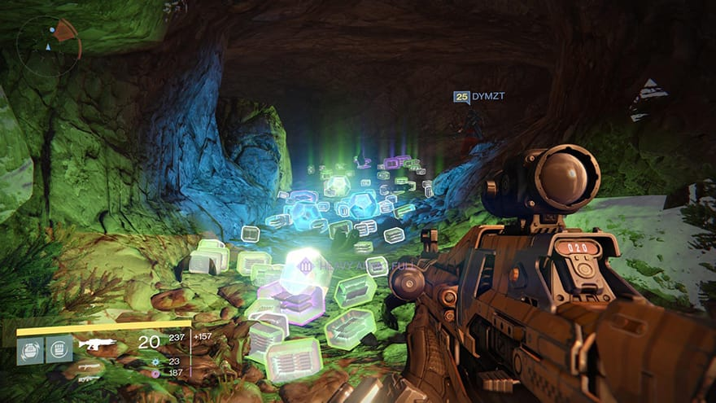
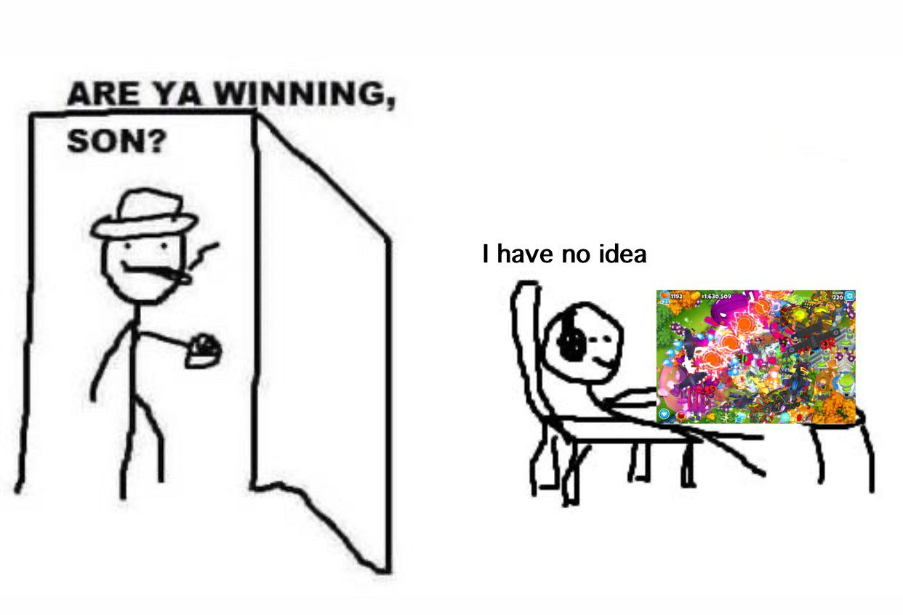

In the real world, the relationship between effort and reward is incredibly messy. You can study for months and fail an exam. You can work hard at a job for years and get passed over for a promotion. The "feedback loops" of daily life are delayed, ambiguous, and often deeply unfair.
Video games fix this. They operate on a framework of absolute clarity:

Agency and Safe Vulnerability
On top of that, games offer a psychological luxury that the real world cannot match: the freedom to fail without real-world consequences. If you make a disastrous financial decision or crash a car in a simulation, you don't ruin your life; you press "Restart." This turns failure from a source of anxiety into a vital, low-stakes learning tool. You are allowed to be vulnerable, to experiment wildly, and to learn from mistakes in a completely safe digital cradle.
There is a massive cognitive difference between passive escapism and active escapism.
When you collapse onto the couch after a grueling day and scroll through social media or turn on a TV show, your brain is largely turning off. It’s a form of numbing, you are letting images wash over you to distract you from your exhaustion.
A video game requires active cognitive investment. Because you have to navigate spaces, solve spatial puzzles, and manage virtual resources, your brain is forced to fully occupy the digital space. You cannot easily worry about your real-world bills or interpersonal stress while you are actively calculating how to survive an intense virtual scenario. It leans into immersion through participation. It doesn't just distract your eyes; it completely hijacks your focus (which in certain cenarios could be a bad thing), providing a much more thorough mental break from reality than passive media ever could.

Architectural and Atmospheric Sovereignty
Human beings are inherently curious, exploring creatures. For thousands of years, our ancestors mapped physical frontiers. Today, the physical world is largely mapped, fenced, and privatized.
Video games offer vast, digital frontiers that reawaken that primal urge to explore. Designers build worlds that operate with absolute visual and atmospheric intent.
This isn't just about looking at pretty pictures; it’s about presence. Because you control the camera and the footsteps, your brain processes these virtual spaces similarly to how it processes real places. Games offer a form of tourism that allows you to claim a sense of belonging in worlds that could never exist in our physical reality.
Finally, games have completely redefined what it means to hang out. For younger generations, games have largely replaced the shopping mall, the local park, or the diner as the default social hub.
In an online game, you aren't just sitting next to a friend in the dark watching a screen. You are logging into a shared space to accomplish a mutual goal. You are communicating, coordinating strategies, laughing at absurd physics glitches, and sharing a collective triumph. It creates organic, high-quality social bonding because it is rooted in doing something together, bypassing the friction of geographic distance entirely.